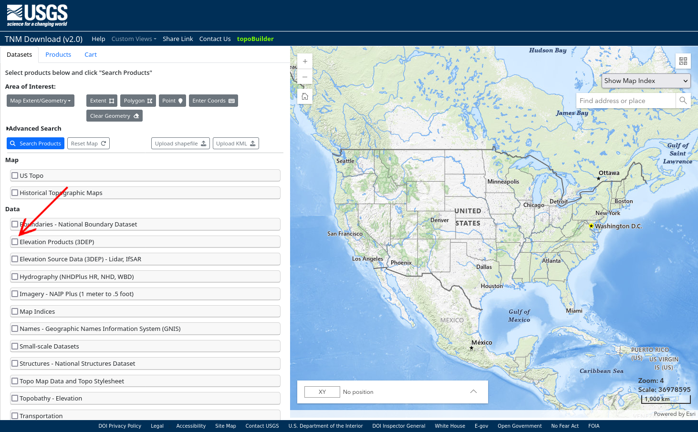
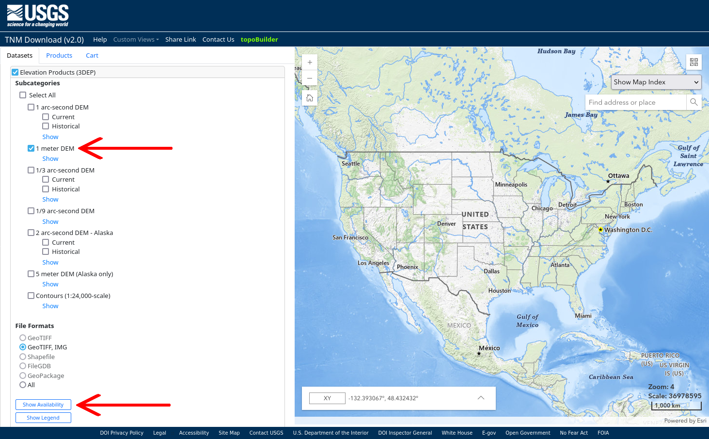
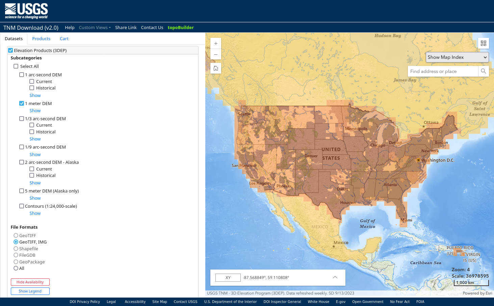
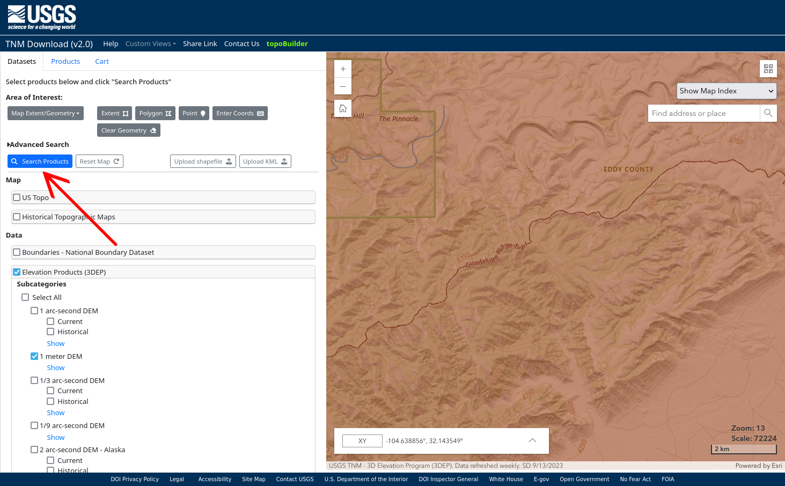
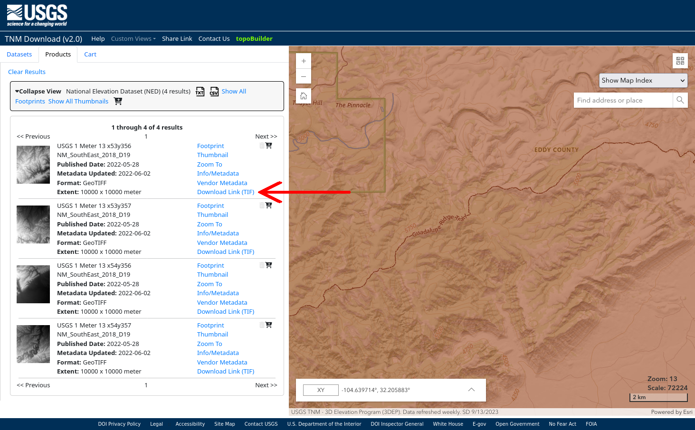
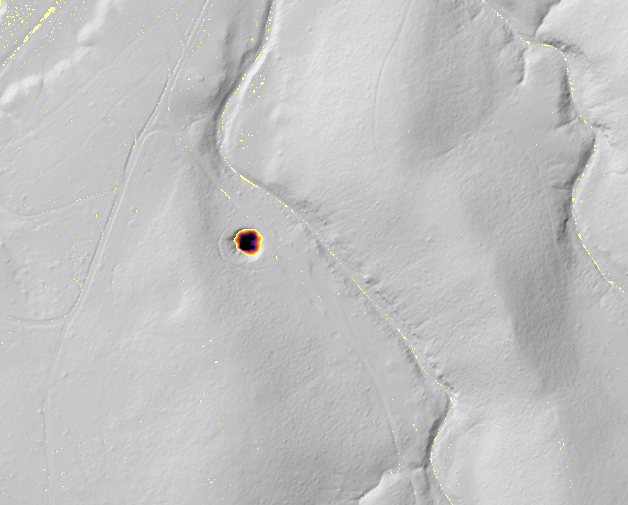
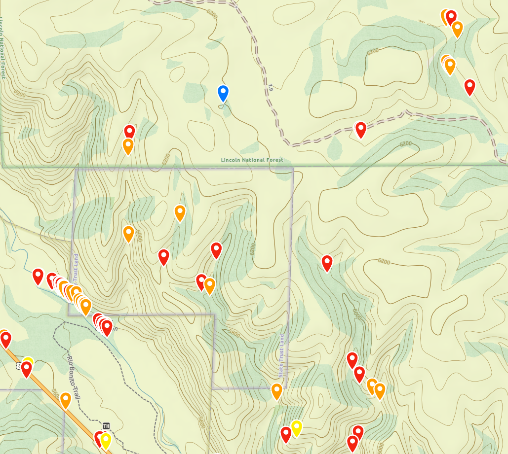

By Alex Fischer. Contact info: alexander dot fischer 3 at gmail dot com, Facebook.
This program takes in 1 meter digital elevation models (DEM's) made from lidar data that the US Geological Survey publishes, and processes the data to automatically detect sinkholes. It exports the sinkholes to a GeoJSON file that contains all the sinkholes as waypoints color-coded by depth, that can be imported into mapping applications such as GaiaGPS, CalTopo, and Google Earth. It also exports a GeoTIFF map file that has a hillshade map with the sinkholes highlighted and colorcoded by depth. This map file can be imported into CalTopo and Avenza to use as a map layer. Expect it to use about 2.8 GB of RAM to process a 10 km by 10 km USGS quad.
This program detects sinkholes by looking for local minima in the landscape, where water cannot drain away. It uses the Priority-Flood algorithm from Barnes, Lehman, Mulla 2014. Specifically it uses the efficient implementation from Zhou, Sun, Fu 2016.
This script uses Python; make sure you have Python 3 installed. Get the script files by downloading from GitHub or by cloning the repository.
Next, install the required Python packages in requirements.txt. You can do this using pip via pip install -r requirements.txt. Now you're ready to use the script that is at sinkholes.py.
The richdem package sometimes doesn't install properly using pip with Python versions >= 3.10. If you have trouble installing richdem, try using Python 3.9 instead. Or you can install richdem using using conda, or build from source.
Now you have to get the LIDAR data for the area you're interested in from the USGS. The USGS publishes this data in 10 km by 10 km squares. The data is available for much of the US, and the USGS plans to gather this data for the entire US eventually.
If the USGS has coverage for the area you're searching for, you can use the script to download it using the --area command and pasting in the lat,lons for two corners defining the bounding box of your search area. For example, python sinkholes.py --area "33.00733, -105.53657, 32.92034, -105.44257"
To find the lidar data for the area you're interested in, go to the USGS's GIS Data Download page. Check the "Elevation Products (3DEP) option on the left:
Then check the "1 meter DEM" option, and uncheck all other options. Then click "Show Availability" at the bottom:
After you click "Show Availability", the map on the right will be shaded dark where 1 meter DEM data is available:
Zoom in on the area you're interested in, making sure that 1 meter DEM data is available for that area. Then click "Search Products" in the upper left corner:
The page will then list the 1 meter DEM files available for download in the area you zoomed in on. Hovering over an option on the left will highlight the area it covers on the map on the right. If there are too many options, keep in mind that each file covers a 10 km by 10 km square, and zoom in if necessary to narrow down the area you're searching. Click "Download Link (TIF)" for the option(s) you want to download the GeoTIFF file with the 1 meter DEM data:
You can execute the script with the following command:
python sinkholes.py -i <input-geotiff-filename.tif> -otif <output-geotiff-filename.tif> -ojson <output-geojson-filename.geojson>
The -i flag is the name of the file with the LIDAR data you downloaded from the USGS. The -otif flag is the name of the file to which it saves the hillshade map with sinkholes highlighted. You can omit this flag if you don't want to export a hillshade map. The -ojson flag is the name of the file to which it saves the list of sinkholes points that can be imported into GaiaGPS, CalTopo, Google Earth, etc. You can omit this flag if you don't want to export a list of sinkhole points.
You can add a flag -c <config-file-name.json> to include a config file that allows you to change some settings. An example config file with all the default settings is in config.json. If you're using GaiaGPS, you'll want to set max_points_per_file to 1000, to split the list of sinkhole points over multiple files if there are more than 1000, because GaiaGPS doesn't let you import more than 1000 objects per file.
The GeoTIFF file exported by the program is a hillshade map with sinkholes highlighted by depth, like so:
This map file has GPS information built in and can be imported into CalTopo and Avenza to use as a map layer. The depth of the sinkhole is shown by the color. Light yellow is 0.5 m by default and black is 6 m deep by default. These default values can be changed in the config file; they are the keys min_depth_for_colormap (default value 0.5 m) and max_depth_for_colormap (default value 6 m).
The sinkholes imported will look something like this: Generally, the script finds many "sinkholes" in streambeds that are just small pools or natural dams in the streambed that make a small depression. Additionally, streams that cross under roads via culverts or bridges are likely to show up as "sinkholes". These many sinkholes in streambeds should usually be ignored in favor of the ones outside of streambeds, which are more likely to be actual karst sinkholes. However, sometimes cave entrances can be in streambeds, so don't necessarily write off all sinkholes found in streambeds!
The sinkholes are colorcoded by depth. The points in CalTopo have their color continuously vary from red (at the default minimum depth of 0.5 m) to purple (at 6 m, and all deeper sinkholes have the same color) according to colors of the rainbow, using a log scale. GaiaGPS has a small set of allowed colors, and the depth maps to those colors using that same rainbow-log-scale:
These min and max values for the colormap log scale can be changed in the config file; they are the keys min_depth_for_colormap (default value 0.5 m) and max_depth_for_colormap (default value 6 m).